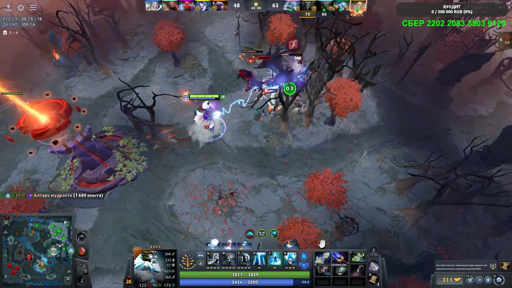
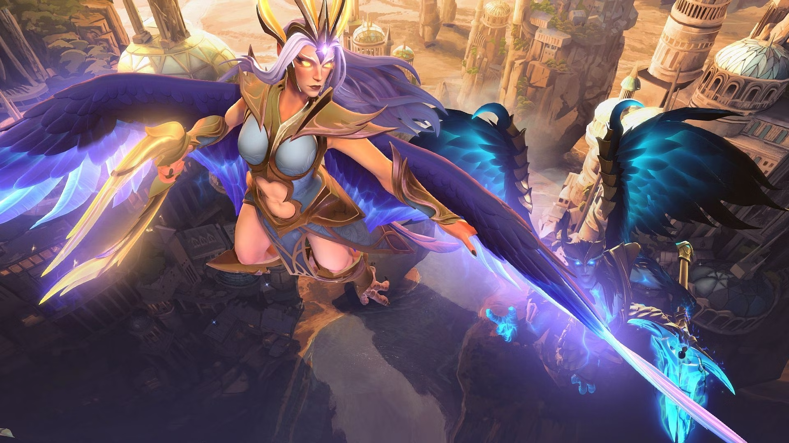
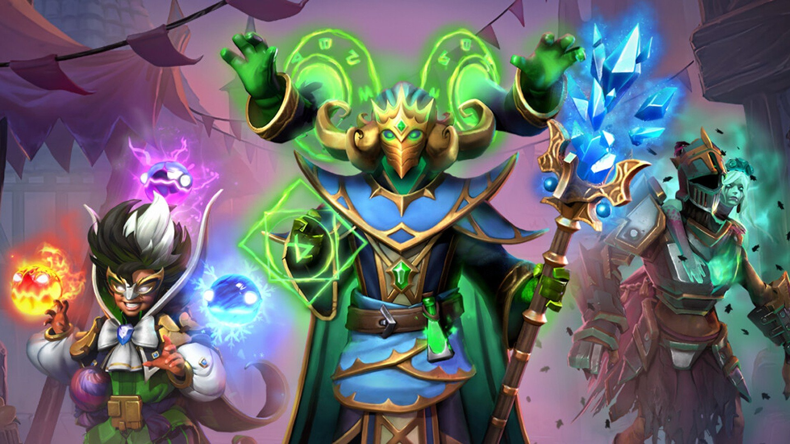
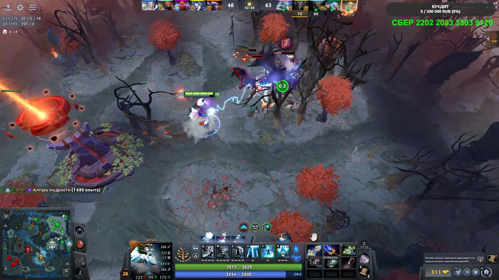
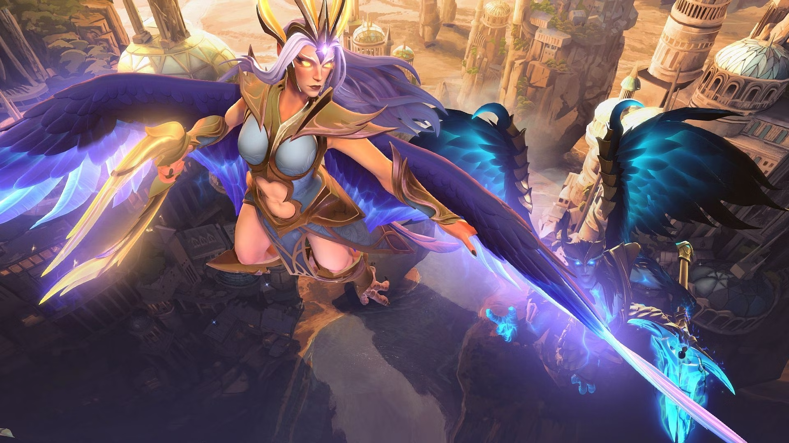
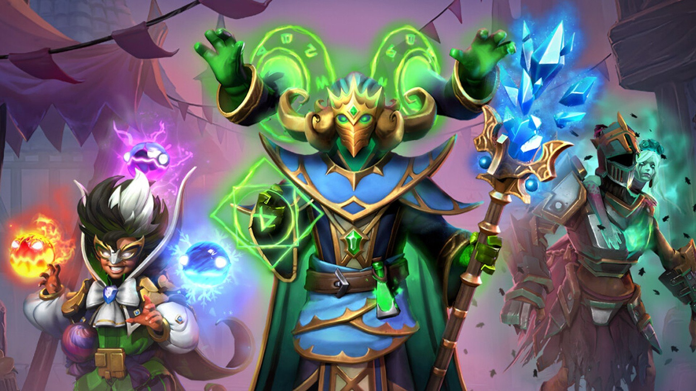

Dota 2
Dota 2 — это бесплатная многопользовательская онлайн-боевая арена, разработанная и изданная компанией Valve. Это одна из самых глубоких, сложных и популярных соревновательных игр в мире, являющаяся прямым наследником знаменитой модификации *Defense of the Ancients (DotA)* для *Warcraft III*. Ключевые особенности: • Цель: Две команды (Свет и Тьма) по 5 игроков сражаются на симметричной карте, чтобы разрушить главное строение противника — Древнего, защищенный сложной системой башен и казарм. • Герои: Каждый игрок управляет уникальным героем. На данный момент в игре более 120 героев, каждый со своим набором из 4-5 уникальных способностей, ролью, сильными и слабыми сторонами. • Роли: Герои выполняют определенные роли в команде, которые формируют стратегию: – Керри (Carry): Позднеигровой урон, требует много ресурсов и защиты. – Мидлейнер (Midlaner): Герой центральной линии, получает быстрый опыт и золото, создает преимущество для команды. – Оффлейнер (Offlaner): Выносливый герой на сложной линии, задача — выживать и мешать вражескому керри. – Саппорт (Support): Помощник, отвечает за контроль карты, помощь союзникам, покупку командных предметов. Часто жертвует собой и ресурсами ради команды.
• Прокачка и золото: Герои получают опыт за убийство существ и врагов, повышая уровень и усиливая способности. Золото зарабатывается для покупки предметов, которые кардинально меняют силу героя. Управление этими ресурсами — основа игры. • Линии (Лайны): Три дороги (топ, центр, низ), по которым идут волны крипов (неуправляемых существ). Борьба за контроль над линиями и их давление — основа ранней игры. • Лес: Область между линиями, населенная нейтральными существами. Фарм в лесу, контроль ключевых точек и рошей (особо сильных нейтралов) — важная стратегическая часть. • Предметы: Огромный арсенал предметов, которые можно комбинировать для усиления характеристик героя, получения новых способностей (например, Блинк-даш для телепортации) или защиты от определенных эффектов. • Виды урона и защита: Физический, магический и чистый урой. Разные типы брони и сопротивления. Понимание этой системы критически важно для эффективных действий. • Высокий порог входа: Игра известна своей сложностью для новичков из-за огромного объема знаний: механики всех героев, взаимодействий предметов, позиционирования, таймингов. • Динамичная метаигра: Игра постоянно меняется благодаря регулярным масштабным обновлениям (патчам) от Valve, которые перебалансируют героев, предметы и добавляют новые механики, заставляя сообщество находить новые стратегии. • Абсолютная командная игра: Победа невозможна без слаженных действий, коммуникации и правильного распределения ролей. Один сильный игрок редко может вытянуть всю игру. Кибеспорт и сообщество: • The International (TI): Ежегодный чемпионат мира по Dota 2 с крупнейшим в истории киберспорта призовым фондом, который формируется за счет продажи внутриигрового боевого пропуска (Compendium). • Мастерская Steam: Возможность для сообщества создавать косметические предметы (скины) для героев, некоторые из которых официально добавляются в игру. • Режимы и кастомизация: Помимо классического режима, есть множество пользовательских игр, рейтинговая система, турниры внутри клиента.


 





Отзывы
Dota 2 — это не просто игра, а бесконечный шахматный поединок с элементами чистого хаоса. Каждый патч переворачивает мету, заставляя заново изучать игру. Бесплатные обновления, грандиозные турниры с многомиллионными призовыми фондами и невероятная глубина механик. Это вершина жанра MOBA, требующая полной самоотдачи. Тот случай, когда сложность — главное достоинство
В основе — идеально отточенный геймплей, где важен каждый крип, позиционирование и тайминг способностей. Беспрецедентное разнообразие героев и предметов позволяет создавать уникальные стратегии на каждый матч. Активная позиция разработчиков с регулярными патчами держит игру в тонусе. Лучшие моменты — это эпичные комбинации и развороты, добытые командной мыслью, а не случайностью
Dota 2 — это вечная, живая вселенная со своей легендарной историей, драмами на The International и миллионами преданных фанатов. Это не развлечение на вечер, а серьёзное хобби, образ мышления и постоянное соревнование с собой. Она не стремится быть удобной или простой, она стремится быть безупречно глубокой, сложной и вознаграждающей. Это шедевр, который уважает интеллект игрока, но совершенно не церемонится с его нервами